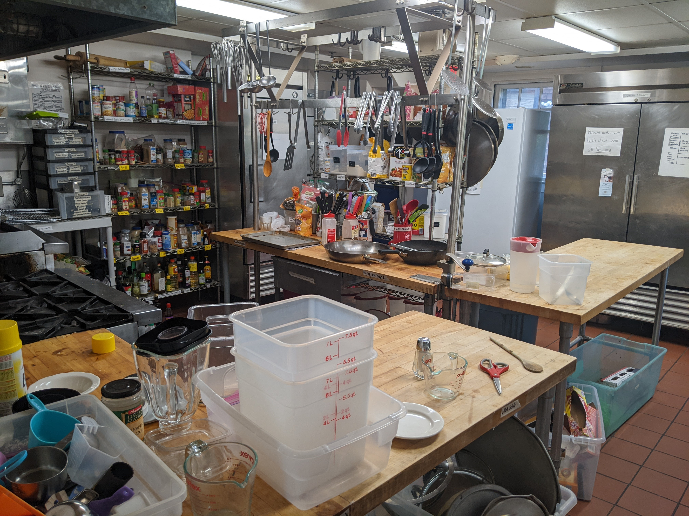
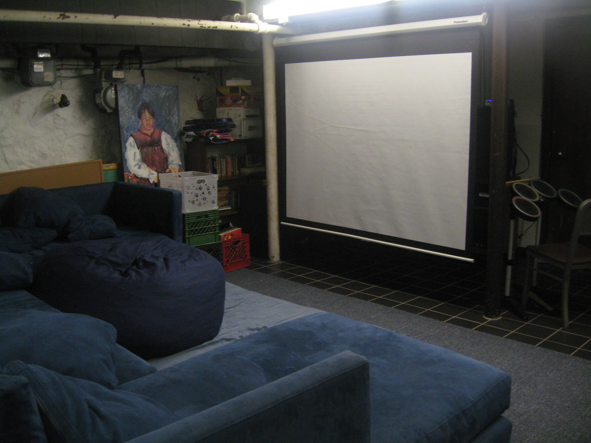

Virtual Tour
Welcome to our home! We'd love for you to drop by in person, but in the meantime, we hope this site will give you a glimpse into what things are like at ET.
If you'd like, you can follow along with these floorplans .
Front Rooms

Immediately after walking in, on your right, you will see front rooms, the most social room in the house. Here you can will find plenty of beanbags and couches to lounge on and plenty of whiteboards full of everything from alignment charts to group theory to square dancing diagrams.
Since front rooms is our primary social space, you will likely see people playing board games, working on their assignments, playing Beat Saber, or having nerdy conversations. Front rooms has plenty of outlets, chargers, and plenty of people ready to help you on that tough PSET problem which makes it a great place to study as long as you don't mind a bit of chatter.
Chapter Room
If you prefer a quieter place to work, then consider chapter room, right across the hall. Chapter room also has plenty of beanbags and couches, but it's generally less social than front rooms and it has closing doors.
Chapter room is also air conditioned during the summer which makes it a very nice place to hang out if you like it cooler. On the other hand, when it's not too hot, we sometimes use the fireplace to make s'mores.
In addition, chapter room has an impressive library of books, including several textbooks that are required for various MIT classes. If you enjoy music, there are also two pianos (a grand piano and an electric keyboard with headphones for quieter playing) and several smaller musical instruments.
Dining Room

Five nights per week, we have communal dinners starting at about 6pm. Everyone gathers to enjoy the delicious foods prepared by that day's chefs. This is also one of our most social times, and our lighthearted dinner are often accompanied by lots of laughing.
The dining room also houses fourth table, a table dedicated to dozens of different types of snacks from fresh fruit to leftover desserts to goldfish.
Kitchen
ET is fully equipped with a well-stocked industrial kitchen. Our 6-burner gas stove, two ovens, and organized spice rack make it a pleasure to cook in. The kitchen features a full size fridge and freezer for personal food, a massive two-door fridge for leftovers and other food that's open to anyone, a full freezer of open food, and an additional fridge and freezer for the weekly chefs. In addition to food for official dinners, we always keep plenty of extra food and cooking supplies for anyone to eat between meals or to prepare your own meals on days without an official dinner.
Pit
Heading downstairs, you'll find the pit, our third large social room. Like our other social rooms, you'll find a large couch a beanbags, perfect for watching movies or playing video games on our projector. This room also features our massive board game collection (181 unique games and counting!)
This room also serves as the gateway to several small rooms including the laundry room (unlike dorms, laundry is free at ET!) and work room, which has just about every tool you could ever need.
Personal Rooms
There are a few personal rooms in the basement, but you'll find most of them on the second floor. Every member of the hosue gets a personal room, including pleges who are still officially living on campus, with a desk, dresser, and wardrobe. We have 2 singles, 3 doubles, 2 triples, and 3 quads, although rooms are rarely used to their full capacity, and we make sure to optimize for everyone's rooming preferences. Unlike dorms, your housebill is fixed regardless of room size, so you won't have to choose between an affordable room and one you're comfortable in.
Dorm
You might have noticed that our personal rooms don't have beds in them! That's because all of our beds are in one big room called dorm. This seems pretty strange to a lot of people at first, but most actives actually find that it's very nice. Dorm is always kept dark and quiet, regardless of the time of day, so you can sleep whenever you want, helping to accommodate all sorts of sleep schedules, and your roomates won't keep you up with their late night studying when you need to get some sleep before your exams tomorrow morning. We encourage people who join to try sleeping in dorm for at least a night or two, and if it doesn't work out, then you can move a mattress into your personal room, as long as your roommates are okay with it.
Because of the way dorm is setup, we have one extra personal room called Trap that isn't assigned to anybody but that anybody can use when they need extra privacy or are feeling sick and need to quarantine.